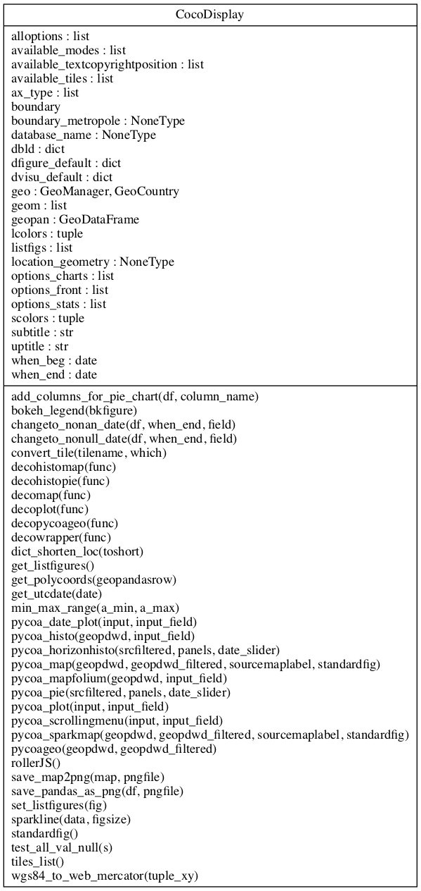

coa.display module
Project : PyCoA Date : april 2020 - march 2021 Authors : Olivier Dadoun, Julien Browaeys, Tristan Beau Copyright ©pycoa.fr License: See joint LICENSE file
Module : coa.display
About :
An interface module to easily plot pycoa data with bokeh
Summary
Classes:
Class diagram:
{kind=link}
Reference
- class CocoDisplay(db=None, geo=None)[source]
Bases:
object- static convert_tile(tilename, which='bokeh')[source]
Return tiles url according to folium or bokeh resquested
- static get_polycoords(geopandasrow)[source]
- Take a row of a geopandas as an input (i.efor index, row in geopdwd.iterrows():…)
and returns a tuple (if the geometry is a Polygon) or a list (if the geometry is a multipolygon) of an exterior.coords
- static min_max_range(a_min, a_max)[source]
Return a cleverly rounded min and max giving raw min and raw max of data. Usefull for hist range and colormap
- pycoa_date_plot(input=None, input_field=None, **kwargs)[source]
Create a date plot according to arguments. See help(pycoa_date_plot). Keyword arguments —————– - input = None : if None take first element. A DataFrame with a Pycoa struture is mandatory |location|date|Variable desired|daily|cumul|weekly|codelocation|clustername|permanentdisplay|rolloverdisplay| - input_field = if None take second element could be a list - plot_heigh= width_height_default[1] - plot_width = width_height_default[0] - title = None - textcopyrightposition = left - textcopyright = default - mode = mouse - guideline = False - cursor_date = None if True
orientation = horizontal
- whendefault min and max according to the inpude DataFrame.
Dates are given under the format dd/mm/yyyy. when format [dd/mm/yyyy : dd/mm/yyyy] if [:dd/mm/yyyy] min date up to if [dd/mm/yyyy:] up to max date
- pycoa_histo(geopdwd, input_field=None, **kwargs)[source]
Create 1D histogramme by value according to arguments. See help(pycoa_histo). Keyword arguments —————– - geopdwd : A DataFrame with a Pycoa struture is mandatory |location|date|Variable desired|daily|cumul|weekly|codelocation|clustername|permanentdisplay|rolloverdisplay| - input_field = if None take second element could be a list - plot_heigh= width_height_default[1] - plot_width = width_height_default[0] - title = None - textcopyrightposition = left - textcopyright = default - when : default min and max according to the inpude DataFrame.
Dates are given under the format dd/mm/yyyy. when format [dd/mm/yyyy : dd/mm/yyyy] if [:dd/mm/yyyy] min date up to if [dd/mm/yyyy:] up to max date
- pycoa_horizonhisto(srcfiltered, panels, date_slider)[source]
Create 1D histogramme by location according to arguments. See help(pycoa_histo). Keyword arguments —————– - srcfiltered : A DataFrame with a Pycoa struture is mandatory |location|date|Variable desired|daily|cumul|weekly|codelocation|clustername|permanentdisplay|rolloverdisplay| - input_field = if None take second element could be a list - plot_heigh= width_height_default[1] - plot_width = width_height_default[0] - title = None - textcopyrightposition = left - textcopyright = default - mode = mouse - cursor_date = None if True
orientation = horizontal
- whendefault min and max according to the inpude DataFrame.
Dates are given under the format dd/mm/yyyy. when format [dd/mm/yyyy : dd/mm/yyyy] if [:dd/mm/yyyy] min date up to if [dd/mm/yyyy:] up to max date
- pycoa_map(geopdwd, geopdwd_filtered, sourcemaplabel, standardfig, **kwargs)[source]
Create a map bokeh with arguments. See help(pycoa_histo). Keyword arguments —————– - srcfiltered : A DataFrame with a Pycoa struture is mandatory |location|date|Variable desired|daily|cumul|weekly|codelocation|clustername|permanentdisplay|rolloverdisplay| - input_field = if None take second element could be a list - plot_heigh= width_height_default[1] - plot_width = width_height_default[0] - title = None - textcopyrightposition = left - textcopyright = default - mode = mouse - cursor_date = None if True
orientation = horizontal
- whendefault min and max according to the inpude DataFrame.
Dates are given under the format dd/mm/yyyy. when format [dd/mm/yyyy : dd/mm/yyyy] if [:dd/mm/yyyy] min date up to if [dd/mm/yyyy:] up to max date
tile : tile
maplabel: False
- pycoa_mapfolium(geopdwd, input_field, **kwargs)[source]
Create a map folium to arguments. See help(pycoa_histo). Keyword arguments —————– - srcfiltered : A DataFrame with a Pycoa struture is mandatory |location|date|Variable desired|daily|cumul|weekly|codelocation|clustername|permanentdisplay|rolloverdisplay| - input_field = if None take second element could be a list - plot_heigh= width_height_default[1] - plot_width = width_height_default[0] - title = None - textcopyrightposition = left - textcopyright = default - mode = mouse - cursor_date = None if True
orientation = horizontal
- whendefault min and max according to the inpude DataFrame.
Dates are given under the format dd/mm/yyyy. when format [dd/mm/yyyy : dd/mm/yyyy] if [:dd/mm/yyyy] min date up to if [dd/mm/yyyy:] up to max date
- pycoa_pie(srcfiltered, panels, date_slider)[source]
Create a pie chart according to arguments. See help(pycoa_pie). Keyword arguments —————– - srcfiltered : A DataFrame with a Pycoa struture is mandatory |location|date|Variable desired|daily|cumul|weekly|codelocation|clustername|permanentdisplay|rolloverdisplay| - input_field = if None take second element could be a list - plot_heigh= width_height_default[1] - plot_width = width_height_default[0] - title = None - textcopyrightposition = left - textcopyright = default - mode = mouse - cursor_date = None if True
orientation = horizontal
- pycoa_plot(input=None, input_field=None, **kwargs)[source]
Create a versus plot according to arguments. See help(pycoa_plot). Keyword arguments —————– - input = None : if None take first element. A DataFrame with a Pycoa struture is mandatory |location|date|Variable desired|daily|cumul|weekly|codelocation|clustername|permanentdisplay|rolloverdisplay| - input_field = if None take second element. It should be a list dim=2. Moreover the 2 variables must be present in the DataFrame considered. - plot_heigh = width_height_default[1] - plot_width = width_height_default[0] - title = None - textcopyrightposition = left - textcopyright = default - mode = mouse - cursor_date = None if True
orientation = horizontal
- whendefault min and max according to the inpude DataFrame.
Dates are given under the format dd/mm/yyyy. when format [dd/mm/yyyy : dd/mm/yyyy] if [:dd/mm/yyyy] min date up to if [dd/mm/yyyy:] up to max date
Create a date plot, with a scrolling menu location, according to arguments. See help(pycoa_scrollingmenu). Keyword arguments —————– len(location) > 2 - input = None : if None take first element. A DataFrame with a Pycoa struture is mandatory |location|date|Variable desired|daily|cumul|weekly|codelocation|clustername|permanentdisplay|rolloverdisplay| - input_field = if None take second element could be a list - plot_heigh= width_height_default[1] - plot_width = width_height_default[0] - title = None - textcopyrightposition = left - textcopyright = default - mode = mouse -guideline = False - cursor_date = None if True
orientation = horizontal
- whendefault min and max according to the inpude DataFrame.
Dates are given under the format dd/mm/yyyy. when format [dd/mm/yyyy : dd/mm/yyyy] if [:dd/mm/yyyy] min date up to if [dd/mm/yyyy:] up to max date
- pycoa_sparkmap(geopdwd, geopdwd_filtered, sourcemaplabel, standardfig, **kwargs)[source]
Create a bokeh map with sparkline label and with to arguments. See help(pycoa_histo). Keyword arguments —————– - srcfiltered : A DataFrame with a Pycoa struture is mandatory |location|date|Variable desired|daily|cumul|weekly|codelocation|clustername|permanentdisplay|rolloverdisplay| - input_field = if None take second element could be a list - plot_heigh= width_height_default[1] - plot_width = width_height_default[0] - title = None - textcopyrightposition = left - textcopyright = default - mode = mouse - cursor_date = None if True
orientation = horizontal
- whendefault min and max according to the inpude DataFrame.
Dates are given under the format dd/mm/yyyy. when format [dd/mm/yyyy : dd/mm/yyyy] if [:dd/mm/yyyy] min date up to if [dd/mm/yyyy:] up to max date
tile : tile
maplabel: False
- static save_map2png(map=None, pngfile='map.png')[source]
Save map as png geckodriver and PIL packages are needed
- static sparkline(data, figsize=(0.5, 0.5), **kwags)[source]
Returns a HTML image tag containing a base64 encoded sparkline style plot